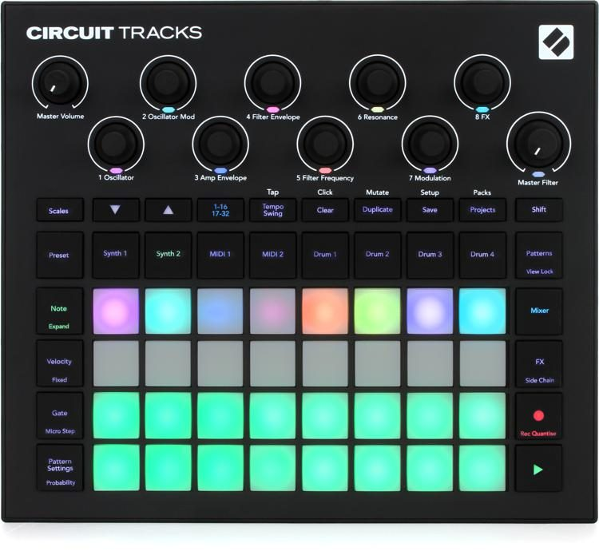

Reverse-engineering of Javascript
2022Обо мне
Руслан Панасюк
Team Lead


Зачем и кому это нужно?
(Мне)
Девайс
Браузер не тот, видите ли
//about:settings
dom.webmidi.enabled: trueА почему? А потому...
Техподдержка?
«I've passed your feedback onto our product team. It may not be something they are interested in doing, but at least I have passed it onto them for their consideration.»
Посмотрим на исходники
☝ Тут оооочень длинная строка
Оригинальных исходников нет, а жаль
Как код становится нечитаемым?
- Конкатенация
- Минификация
- Компиляция / Транспиляция
- Обфускация
Prettier
https://prettier.io/UnminifyJS
https://unminify.com/de4js
https://lelinhtinh.github.io/de4js/js-beautify
https://beautifier.io/UnuglifyJS
https://github.com/eth-sri/UnuglifyJSjs-smr
Это мой инструмент для восстановления имен по Source Map
https://github.com/unrealsolver/js-smrСтатистические модели
JSNice
http://www.jsnice.org/Nice2Predict
http://nice2predict.org/Пример минифицированного кода
function sum(lvalue, rvalue) {
return lvalue + rvalue;
}
console.log(sum(10, 20));function sum(n,o){return n+o}console.log(sum(10,20));
//# sourceMappingURL=test.min.js.mapСкачиваем js и map-file
nba-178-31a@nba-178-31a ~/d/reverse> wget https://▒▒▒▒▒▒▒▒▒▒.▒▒▒▒▒▒▒▒.▒▒▒/assets/frontend-2c1f24873f9b5c1f02c2fef69c5ca324.{js,map}
--2022-05-13 00:20:48-- https://▒▒▒▒▒▒▒▒▒▒.▒▒▒▒▒▒▒▒.▒▒▒/assets/frontend-2c1f24873f9b5c1f02c2fef69c5ca324.js
Resolving ▒▒▒▒▒▒▒▒▒▒.▒▒▒▒▒▒▒▒.▒▒▒ (▒▒▒▒▒▒▒▒▒▒.▒▒▒▒▒▒▒▒.▒▒▒)... ▒▒▒.▒▒▒.▒▒▒.▒▒▒
Connecting to ▒▒▒▒▒▒▒▒▒▒.▒▒▒▒▒▒▒▒.▒▒▒ (▒▒▒▒▒▒▒▒▒▒.▒▒▒▒▒▒▒▒.▒▒▒)|▒▒▒.▒▒▒.▒▒▒.▒▒▒|:443... connected.
HTTP request sent, awaiting response... 200 OK
Length: 3136518 (3,0M) [application/javascript]
Saving to: ‘frontend-2c1f24873f9b5c1f02c2fef69c5ca324.js.1’
frontend-2c1f24873f9b5c1f02c2fef6 100%[=============================================================>] 2,99M 2,52MB/s in 1,2s
2022-05-13 00:20:50 (2,52 MB/s) - ‘frontend-2c1f24873f9b5c1f02c2fef69c5ca324.js.1’ saved [3136518/3136518]
--2022-05-13 00:20:50-- https://▒▒▒▒▒▒▒▒▒▒.▒▒▒▒▒▒▒▒.▒▒▒/assets/frontend-2c1f24873f9b5c1f02c2fef69c5ca324.map
Reusing existing connection to ▒▒▒▒▒▒▒▒▒▒.▒▒▒▒▒▒▒▒.▒▒▒:443.
HTTP request sent, awaiting response... 200 OK
Length: 1921907 (1,8M) [binary/octet-stream]
Saving to: ‘frontend-2c1f24873f9b5c1f02c2fef69c5ca324.map.1’
frontend-2c1f24873f9b5c1f02c2fef6 100%[=============================================================>] 1,83M 3,91MB/s in 0,5s
2022-05-13 00:20:51 (3,91 MB/s) - ‘frontend-2c1f24873f9b5c1f02c2fef69c5ca324.map.1’ saved [1921907/1921907]
FINISHED --2022-05-13 00:20:51--
Total wall clock time: 3,5s
Downloaded: 2 files, 4,8M in 1,7s (2,91 MB/s)
nba-178-31a@nba-178-31a ~/d/reverse>
Получаем такой файл...
"use strict";define("frontend/adapters/-json-api",["exports","@ember-data/adapter
/json-api"],(function(e,t){Object.defineProperty(e,"__esModule",{value:!0}),Objec
t.defineProperty(e,"default",{enumerable:!0,get:function(){return t.default}})}))
,define("frontend/adapters/application",["exports","frontend/adapters/form-data",
"@ember/string","ember-inflector"],(function(e,t,n,i){Object.defineProperty(e,"__
esModule",{value:!0}),e.default=void 0;class r extends t.default{constructor(...e
){var t,n,i;super(...e),t=this,n="namespace",i="api/v2",n in t?Object.definePrope
rty(t,n,{value:i,enumerable:!0,configurable:!0,writable:!0}):t[n]=i}pathForType(e
){return(0,n.underscore)(e).replace(/_factory_pack$|_pack$|_sample_category$|_sam
ple$/,(e=>(0,i.pluralize)(e.replace(/^_/,"/"))))}}e.default=r})),define("frontend
/adapters/csrf-active-model",["exports","active-model-adapter","ember-cli-rails-a
ddon/mixins/csrf-adapter","frontend/config/environment"],(function(e,t,n,i){Objec
t.defineProperty(e,"__esModule",{value:!0}),e.default=void 0;const r=t.default.ex
tend(n.default);e.default=class extends r{constructor(...e){var t,n,r;super(...e)
,t=this,n="host",r=i.default.APP.API_HOST,n in t?Object.defineProperty(t,n,{value
:r,enumerable:!0,configurable:!0,writable:!0}):t[n]=r}ajax(e,t,n){return n=n||{},
n.crossDomain=!0,n.xhrFields={withCredentials:!0},super.ajax(e,t,n)}shouldReloadA
ll(){return!0}buildURL(e,t){var n=super.buildURL(e,t);return n+".json"}}})),defin
e("frontend/adapters/form-data",["exports","frontend/adapters/csrf-active-model",
"@ember/array"],(function(e,t,n){function i(e,t,n){return t in e?Object.definePro
perty(e,t,{value:n,enumerable:!0,configurable:!0,writable:!0}):e[t]=n,e}Object.de
fineProperty(e,"__esModule",{value:!0}),e.default=void 0;class r extends t.defaul
t{constructor(...e){super(...e),i(this,"formDataTypes",["POST","PUT","PATCH"]),i(
this,"disableRoot",!1)}ajaxOptions(e,t,n){var i;n&&"data"in n&&(i=n.data);var r=s
uper.ajaxOptions.apply(this,arguments);return"undefined"!=typeof FormData&&i&&thi
s.formDataTypes.indexOf(t)>=0&&(r.processData=!1,r.contentType=!1,void 0!==r.head
ers&&delete r.headers["content-type"],r.data=this._getFormData(i)),r}_getFormData
(e){var t=new FormData;if(this.disableRoot){var n=Object.keys(e)[0];Object.keys(e
[n]).forEach((function(i){this._appendValue(e[n][i],i,t)}),this)}else Object.keys
(e).forEach((function(n){this._appendValue(e[n],n,t)}),this);return t}_appendValu
e(e,t,i){(0,n.isArray)(e)?e.forEach((function(e){this._appendValue(e,`${t}[]`,i)}
),this):e&&e.constructor===Object?Object.keys(e).forEach((function(n){this._appen
dValue(e[n],`${t}[${n}]`,i)}),this):void 0!==e&&i.append(t,null===e?"":e)}}e.defa
ult=r})),define("frontend/adapters/identity",["exports","frontend/adapters/csrf-a
ctive-model"],(function(e,t){Object.defineProperty(e,"__esModule",{value:!0}),e.d
efault=void 0;class n extends t.default{constructor(...e){var t,n,i;super(...e),t
=this,n="namespace",i="api",n in t?Object.defineProperty(t,n,{value:i,enumerable:
!0,configurable:!0,writable:!0}):t[n]=i}}e.default=n})),define("frontend/app",["e
xports","@ember/application","frontend/resolver","ember-load-initializers","front
end/config/environment","@sentry/ember"],(function(e,t,n,i,r,a){function o(e,t,n)
{return t in e?Object.defineProperty(e,t,{value:n,enumerable:!0,configurable:!0,w
ritable:!0}):e[t]=n,e}Object.defineProperty(e,"__esModule",{value:!0}),e.default=
void 0,window.NO_EMBER_DEBUG="development"!==r.default.environment,a.InitSentryFo
rEmber();class l extends t.default{constructor(...e){super(...e),o(this,"modulePr
efix",r.default.modulePrefix),o(this,"podModulePrefix",r.default.podModulePrefix)
,o(this,"Resolver",n.default)}}e.default=l,(0,i.default)(l,r.default.modulePrefix
)})),define("frontend/component-managers/glimmer",["exports","@glimmer/component/
-private/ember-component-manager"],(function(e,t){Object.defineProperty(e,"__esMo
dule",{value:!0}),Object.defineProperty(e,"default",{enumerable:!0,get:function()
{return t.default}})})),define("frontend/components/-dynamic-element-alt",["expor
Размер: 3.2МБ
Пропустим через de4js
"use strict";
define("frontend/adapters/-json-api", ["exports", "@ember-data/adapter/json-api"], (function (e, t) {
Object.defineProperty(e, "__esModule", {
value: !0
}), Object.defineProperty(e, "default", {
enumerable: !0,
get: function () {
return t.default
}
})
})), define("frontend/adapters/application", ["exports", "active-model-adapter", "frontend/config/environment", "ember-cli-rails-addon/mixins/csrf-adapter"], (function (e, t, n, i) {
Object.defineProperty(e, "__esModule", {
value: !0
}), e.default = void 0;
var r = t.default.extend(i.default, {
host: n.default.APP.API_HOST,
namespace: "api",
ajax: function (e, t, n) {
return n = n || {}, n.crossDomain = !0, n.xhrFields = {
withCredentials: !0
}, this._super(e, t, n)
},
shouldReloadAll: () => !0,
buildURL: function (e, t) {
var n = this._super(e, t);
return n + ".json"
}
});
e.default = r
}))
Осталось прочесть 59k строк
...и решить ребусы
var i, r, a, o, l, s, c, u, d, h, p, m, f, b, v, g, y, w; Простые эвристики
void 0 -> undefined
!1 -> false
!0 -> true
function -> =>Но не стоит применять здесь Regular Expression, т.к. это не регулярная грамматика
Что нам может дать Source Map?
Структура Source Maps
{
"version": 3,
"sources": [
"test.js"
],
"names": [
"sum",
"lvalue",
"rvalue",
"console",
"log"
],
"mappings": "AAAA,SAASA,IAAIC,EAAQC,GACjB,OAAOD,EAASC,EAEpBC,QAAQC,IAAIJ,IAAI,GAAI"
}Как расшифровать Mappings? Использовать Base64/VLQ декодирование
AAAA,SAASA,IAAIC,EAAQC,GACjB,OAAOD,EAASC,EAEpBC,QAAQC,IAAIJ,IAAI,GAAIПосле декодирования
[0,0,0,0], [9,0,0,9,0], [4,0,0,4,1], [2,0,0,8,1], [3,0,1,-17], [7,0,0,7,-1], [2,0,0,9,1], [2,0,2,-20,1], [8,0,0,8,1], [4,0,0,4,-4], [4,0,0,4], [3,0,0,4]Структура mappings
- номер столбца в сгенерированном файле
- индекс исходника в «sources»
- номер строки исходника
- номер столбца исходника
- индекс имени переменной/функции из списка «names»
Восстановлениe имен
js-smr в действии:
"use strict";
define("frontend/adapters/-json-api", ["exports", "@ember-data/adapter/json-api"], (function (_exports, _jsonApi) {
Object.defineProperty(_exports, "__esModule", {
value: !0
}), Object.defineProperty(_exports, "default", {
enumerable: !0,
get: function () {
return _jsonApi.default
}
})
})), define("frontend/adapters/application", ["exports", "active-model-adapter", "frontend/config/environment", "ember-cli-rails-addon/mixins/csrf-adapter"], (function (_exports, _activeModelAdapter, _environment, _csrfAdapter) {
Object.defineProperty(_exports, "__esModule", {
value: !0
}), _exports.default = void 0;
var _default = _activeModelAdapter.default.extend(_csrfAdapter.default, {
host: _environment.default.APP.API_HOST,
namespace: "api",
ajax: function (url, method, hash) {
return hash = hash || {}, hash.crossDomain = !0, hash.xhrFields = {
withCredentials: !0
}, this._super(url, method, hash)
},
shouldReloadAll: () => !0,
buildURL: function (record, suffix) {
var s = this._super(record, suffix);
return s + ".json"
}
});
_exports.default = _default
})), define("frontend/adapters/backup", ["exports", "frontend/adapters/application", "frontend/mixins/form-data-adapter"], (function (_exports, _application, _formDataAdapter) {
Object.defineProperty(_exports, "__esModule", {
value: !0
}), _exports.default = void 0;
var _default = _application.default.extend(_formDataAdapter.default, {});
_exports.default = _default
})), define("frontend/adapters/bsii-afx-factory-pack", ["exports", "frontend/adapters/application"], (function (_exports, _application) {
Object.defineProperty(_exports, "__esModule", {
value: !0
}), _exports.default = void 0;
class BsiiAfxFactoryPackAdapter extends _application.default {
constructor(...args) {
var obj, key, value;
super(...args), t = this, n = "namespace", i = "api/v2", key in obj ? Object.defineProperty(obj, key, {
value: value,
enumerable: !0,
configurable: !0,
writable: !0
}) : obj[key] = value
}
pathForType() {
return "bsii_afx/factory_packs"
}
}
_exports.default = BsiiAfxFactoryPackAdapter
})), define("frontend/adapters/bsii-afx-pack", ["exports", "frontend/adapters/application", "frontend/mixins/form-data-adapter"], (function (_exports, _application, _formDataAdapter) {
Object.defineProperty(_exports, "__esModule", {
value: !0
}), _exports.default = void 0;
var _default = _application.default.extend(_formDataAdapter.default, {
namespace: "api/v2",
pathForType: () => "bsii_afx/packs"
});
_exports.default = _default
})), define("frontend/adapters/bsii-bank", ["exports", "frontend/adapters/application", "frontend/mixins/form-data-adapter"], (function (_exports, _application, _formDataAdapter) {
Object.defineProperty(_exports, "__esModule", {
value: !0
}), _exports.default = void 0;
var _default = _application.default.extend(_formDataAdapter.default);
_exports.default = _default
})), define("frontend/adapters/bsii-factory-pack", ["exports", "frontend/adapters/application"], (function (_exports, _application) {
Object.defineProperty(_exports, "__esModule", {
value: !0
}), _exports.default = void 0;
var _default = _application.default.extend({
namespace: "api/v2",
pathForType: () => "bsii/factory_packs"
});
_exports.default = _default
}))
Анализ AST
Разбиение на файлы
"use strict";
define("frontend/adapters/-json-api", ["exports", "@ember-data/adapter/json-api"], (function (_exports, _jsonApi) {
Object.defineProperty(_exports, "__esModule", {
value: !0
}), Object.defineProperty(_exports, "default", {
enumerable: !0,
get: function () {
return _jsonApi.default
}
})
})), define("frontend/adapters/application", ["exports", "active-model-adapter", "frontend/config/environment", "ember-cli-rails-addon/mixins/csrf-adapter"], (function (_exports, _activeModelAdapter, _environment, _csrfAdapter) {
Object.defineProperty(_exports, "__esModule", {
value: !0
}), _exports.default = void 0;
var _default = _activeModelAdapter.default.extend(_csrfAdapter.default, {
host: _environment.default.APP.API_HOST,
namespace: "api",
ajax: function (url, method, hash) {
return hash = hash || {}, hash.crossDomain = !0, hash.xhrFields = {
withCredentials: !0
}, this._super(url, method, hash)
},
shouldReloadAll: () => !0,
buildURL: function (record, suffix) {
var s = this._super(record, suffix);
return s + ".json"
}
});
_exports.default = _default
})), define("frontend/adapters/backup", ["exports", "frontend/adapters/application", "frontend/mixins/form-data-adapter"], (function (_exports, _application, _formDataAdapter) {
Object.defineProperty(_exports, "__esModule", {
value: !0
}), _exports.default = void 0;
var _default = _application.default.extend(_formDataAdapter.default, {});
_exports.default = _default
})), define("frontend/adapters/bsii-afx-factory-pack", ["exports", "frontend/adapters/application"], (function (_exports, _application) {
Object.defineProperty(_exports, "__esModule", {
value: !0
}), _exports.default = void 0;
class BsiiAfxFactoryPackAdapter extends _application.default {
constructor(...args) {
var obj, key, value;
super(...args), t = this, n = "namespace", i = "api/v2", key in obj ? Object.defineProperty(obj, key, {
value: value,
enumerable: !0,
configurable: !0,
writable: !0
}) : obj[key] = value
}
pathForType() {
return "bsii_afx/factory_packs"
}
}
_exports.default = BsiiAfxFactoryPackAdapter
})), define("frontend/adapters/bsii-afx-pack", ["exports", "frontend/adapters/application", "frontend/mixins/form-data-adapter"], (function (_exports, _application, _formDataAdapter) {
Object.defineProperty(_exports, "__esModule", {
value: !0
}), _exports.default = void 0;
var _default = _application.default.extend(_formDataAdapter.default, {
namespace: "api/v2",
pathForType: () => "bsii_afx/packs"
});
_exports.default = _default
})), define("frontend/adapters/bsii-bank", ["exports", "frontend/adapters/application", "frontend/mixins/form-data-adapter"], (function (_exports, _application, _formDataAdapter) {
Object.defineProperty(_exports, "__esModule", {
value: !0
}), _exports.default = void 0;
var _default = _application.default.extend(_formDataAdapter.default);
_exports.default = _default
})), define("frontend/adapters/bsii-factory-pack", ["exports", "frontend/adapters/application"], (function (_exports, _application) {
Object.defineProperty(_exports, "__esModule", {
value: !0
}), _exports.default = void 0;
var _default = _application.default.extend({
namespace: "api/v2",
pathForType: () => "bsii/factory_packs"
});
_exports.default = _default
}))
Используем парсер Acorn и получим такой AST
{
"type": "Program",
"start": 0,
"end": 4366318,
"body": [
{
"type": "ExpressionStatement",
"start": 0,
"end": 13,
"expression": {
"type": "Literal",
"start": 0,
"end": 12,
"value": "use strict",
"raw": "\"use strict\""
},
"directive": "use strict"
},
{
"type": "ExpressionStatement",
"start": 14,
"end": 1888274,
"expression": {
"type": "SequenceExpression",
"start": 14,
"end": 1888273,
"expressions": [
{
"type": "CallExpression",
"start": 14,
"end": 360,
"callee": {
"type": "Identifier",
"start": 14,
"end": 20,
"name": "define"
},
"arguments": [
{
"type": "Literal",
"start": 21,
"end": 50,
"value": "frontend/adapters/-json-api",
"raw": "\"frontend/adapters/-json-api\""
},
Используем скрипт для разбиения на файлы
frontend/
├── adapters
│ ├── application.js
│ ├── backup.js
│ ├── bsii-afx-factory-pack.js
│ ├── bsii-afx-pack.js
│ ├── bsii-bank.js
│ ├── bsii-factory-pack.js
│ ├── bsii-pack.js
│ ├── circuit-patch.js
│ ├── circuit-rhythm-factory-pack.js
│ ├── circuit-rhythm-pack.js
│ ├── circuit-tracks-factory-pack.js
│ ├── circuit-tracks-midi-template-factory-pack.js
│ ├── circuit-tracks-midi-template-pack.js
│ ├── circuit-tracks-pack.js
│ ├── circuit-tracks-patch-factory-pack.js
│ ├── circuit-tracks-patch-pack.js
│ ├── form-data.js
│ ├── -json-api.js
│ ├── launch-control-mk1-factory-pack.js
│ ├── launch-control-mk1-pack.js
│ ├── launch-control-xl-mk2-factory-pack.js
│ ├── launch-control-xl-mk2-pack.js
│ ├── launchkey-mini-mk3-factory-pack.js
│ ├── launchkey-mini-mk3-pack.js
│ ├── launchkey-mk3-factory-pack.js
│ ├── launchkey-mk3-pack.js
│ ├── launchpad-mini-mk3-factory-pack.js
│ ├── launchpad-mini-mk3-pack.js
│ ├── launchpad-pro-mk3-custom-mode-factory-pack.js
│ ├── launchpad-pro-mk3-custom-mode-pack.js
│ ├── launchpad-pro-mk3-project-factory-pack.js
│ ├── launchpad-pro-mk3-project-pack.js
│ ├── launchpad-x-factory-pack.js
│ ├── launchpad-x-pack.js
│ ├── monostation-pack.js
│ ├── patch-set.js
│ ├── peak-factory-pack.js
│ ├── peak-pack.js
│ ├── sampleset.js
│ ├── sl-mkiii-factory-pack.js
│ ├── sl-mkiii-pack.js
│ ├── sl-mkiii-template-factory-pack.js
│ ├── sl-mkiii-template-pack.js
│ ├── summit-factory-pack.js
│ ├── summit-pack.js
│ ├── wavetable-factory-pack.js
│ ├── wavetable-pack.js
│ ├── wavetable-samples-sample-category.js
│ └── wavetable-samples-sample.js
├── app.js
├── component-managers
│ └── glimmer.js
├── components
│ ├── animated-beacon.js
│ ├── animated-container.js
│ ├── animated-each.js
│ ├── animated-if.js
│ ├── animated-orphans.js
│ ├── animated-value.js
│ ├── auth-widget.js
│ ├── bank-and-patch-chooser.js
│ ├── bank-chooser.js
│ ├── bar-slider.js
│ ├── bass-station-ii
│ │ ├── afx-bank-select.js
│ │ ├── afx-editor.js
│ │ ├── afx-editor-sidebar.js
│ │ ├── afx-env-controls.js
│ │ ├── afx-lfo-controls.js
│ │ ├── afx-osc-controls.js
│ │ ├── afx-output-controls.js
│ │ ├── afx-overlay-details.js
│ │ ├── afx-overlay-key.js
│ │ ├── afx-tuning-controls.js
│ │ ├── custom-message-input.js
│ │ ├── device-setup.js
│ │ ├── menu.js
│ │ └── seven-segment-display.js
│ ├── browser
│ │ ├── color-picker-button.js
│ │ ├── color-picker-item.js
│ │ ├── color-picker.js
│ │ ├── content-browser.js
│ │ ├── content-tabs.js
│ │ ├── factory-pack-item.js
│ │ ├── factory-pack.js
│ │ ├── factory-patch-set.js
│ │ ├── link.js
│ │ ├── list.js
│ │ ├── pack-browser.js
│ │ ├── pack-item.js
│ │ ├── packs.js
│ │ ├── patch-browser.js
│ │ ├── patch-content-tabs.js
│ │ ├── patch-item.js
│ │ ├── patch-set.js
│ │ ├── patch-set-list.js
│ │ ├── toggle-button.js
│ │ ├── trash-button.js
│ │ └── user-pack.js
│ ├── browser-container.js
│ ├── browser-pack.js
│ ├── category-select.js
│ ├── check-box.js
│ ├── checkbox-toggle.js
│ ├── circuit
│ │ ├── device-setup.js
│ │ ├── macro-assignment-container.js
│ │ ├── menu.js
│ │ ├── mod-assignment.js
│ │ ├── mod-destination.js
│ │ ├── packs-sidebar.js
│ │ └── synth-editor.js
│ ├── circuit-box.js
│ ├── circuit-env-settings.js
│ ├── circuit-eq-settings.js
│ ├── circuit-filter-settings.js
│ ├── circuit-fx-distortion.js
│ ├── circuit-fx-settings.js
│ ├── circuit-gen2
│ │ ├── select-entity.js
│ │ └── send-set-to-device.js
│ ├── circuit-lfo-settings.js
│ ├── circuit-lfo-table-display.js
│ ├── circuit-macro-controls.js
│ ├── circuit-macro-settings.js
│ ├── circuit-mixer-settings.js
│ ├── circuit-mod-matrix-destination-icon.js
│ ├── circuit-mod-matrix-source-icon.js
│ ├── circuit-osc-settings.js
│ ├── circuit-patch-chooser.js
│ ├── circuit-rate-knob.js
│ ├── circuit-rhythm
│ │ ├── device-setup.js
│ │ ├── get-pack.js
│ │ ├── grid-effect-autofilter.js
│ │ ├── grid-effect-beat-repeat.js
│ │ ├── grid-effect-buffer.js
│ │ ├── grid-effect-controls.js
│ │ ├── grid-effect-digital-lofi.js
│ │ ├── grid-effect-gater.js
│ │ ├── grid-effect-phaser.js
│ │ ├── grid-effect-rate.js
│ │ ├── grid-effects-collection.js
│ │ ├── grid-effects-icons.js
│ │ ├── grid-effect-vinyl.js
│ │ ├── menu.js
│ │ ├── phaser-rate-knob.js
│ │ ├── single-entity-content-transfer.js
│ │ └── vinyl-filter-graph.js
│ ├── circuit-tracks
│ │ ├── device-setup.js
│ │ ├── get-pack.js
│ │ ├── get-patch.js
│ │ ├── macro-knob.js
│ │ ├── macros-sidebar.js
│ │ ├── menu.js
│ │ ├── save-patch-dialog.js
│ │ ├── session-compatibility-warning.js
│ │ └── single-entity-content-transfer.js
│ ├── circuit-voice-settings.js
│ ├── circuit-wavetable-display.js
│ ├── color-picker-item.js
│ ├── color-picker-mobile.js
│ ├── control-image.js
│ ├── count-down.js
│ ├── custom-mode-select-modal.js
│ ├── data-loader.js
│ ├── device-status.js
│ ├── drop-down-menu.js
│ ├── -dynamic-element-alt.js
│ ├── -dynamic-element.js
│ ├── ea-list-element.js
│ ├── editable-value.js
│ ├── electron-update-notice.js
│ ├── ember-modal-dialog
│ │ ├── -basic-dialog.js
│ │ ├── -in-place-dialog.js
│ │ ├── -liquid-dialog.js
│ │ ├── -liquid-tether-dialog.js
│ │ └── -tether-dialog.js
│ ├── ember-modal-dialog-positioned-container.js
│ ├── ember-wormhole.js
│ ├── factory-pack-info.js
│ ├── fa-icon.js
│ ├── fa-list.js
│ ├── fa-stack.js
│ ├── file-upload.js
│ ├── firmware-device-confirmation.js
│ ├── firmware-help.js
│ ├── firmware-update-notice.js
│ ├── firmware-updater.js
│ ├── footer-section.js
│ ├── generic-progress-display.js
│ ├── global-confirmation.js
│ ├── global-progress.js
│ ├── graphical-envelope.js
│ ├── graphical-filter.js
│ ├── grid
│ │ ├── collection.js
│ │ ├── item-content.js
│ │ ├── item.js
│ │ ├── select.js
│ │ └── select-modal.js
│ ├── grid-slot.js
│ ├── hash-loader.js
│ ├── help-modal.js
│ ├── hyper-link.js
│ ├── if-electron.js
│ ├── import-audio-modal.js
│ ├── inc-dec-button-group.js
│ ├── inc-dec-select.js
│ ├── inline-progress-display.js
│ ├── input-hex.js
│ ├── input-number.js
│ ├── keyboard-press.js
│ ├── knob.js
│ ├── knob-svg.js
│ ├── labelled-value.js
│ ├── launch-control
│ │ ├── template-select-modal.js
│ │ └── template-settings.js
│ ├── launch-control-button.js
│ ├── launch-control-fader.js
│ ├── launch-control-mk1
│ │ ├── device-setup.js
│ │ └── menu.js
│ ├── launch-control-mk1.js
│ ├── launch-control-pot.js
│ ├── launch-control-xl-mk2
│ │ ├── device-setup.js
│ │ └── menu.js
│ ├── launch-control-xl-mk2.js
│ ├── launchkey-mini-mk3
│ │ ├── device-setup.js
│ │ ├── display-reboot-message.js
│ │ ├── menu.js
│ │ ├── pad.js
│ │ ├── pads.js
│ │ ├── pots.js
│ │ ├── reset-custom-mode-warning.js
│ │ ├── reset-custom-mode-warning-modal.js
│ │ ├── sustain-pedal.js
│ │ └── template-editor.js
│ ├── launchkey-mk3
│ │ ├── control.js
│ │ ├── custom-mode-control-settings.js
│ │ ├── custom-mode-select.js
│ │ ├── device-setup.js
│ │ ├── faders.js
│ │ ├── get-started.js
│ │ ├── menu.js
│ │ ├── pads.js
│ │ ├── pedal-settings.js
│ │ ├── pots.js
│ │ └── select-custom-mode-type.js
│ ├── launchpad-global-settings.js
│ ├── launchpad-grid.js
│ ├── launchpad.js
│ ├── launchpad-meta-object.js
│ ├── launchpad-mini-mk3
│ │ ├── device-setup.js
│ │ └── menu.js
│ ├── launchpad-mini-mk3.js
│ ├── launchpad-pad.js
│ ├── launchpad-project-settings.js
│ ├── launchpad-pro-mk3
│ │ ├── device-setup.js
│ │ └── menu.js
│ ├── launchpad-pro-mk3.js
│ ├── launchpad-pro-mk3-projects.js
│ ├── launchpad-widget-browser.js
│ ├── launchpad-widget.js
│ ├── launchpad-widgets
│ │ ├── chromatic-keyboard.js
│ │ ├── color-picker.js
│ │ ├── control-change.js
│ │ ├── control-value-input.js
│ │ ├── drum-grid.js
│ │ ├── fader.js
│ │ ├── midi-channel-select.js
│ │ ├── midi-note.js
│ │ ├── note-select.js
│ │ ├── pad-mode-select.js
│ │ ├── program-change.js
│ │ ├── scale-keyboard.js
│ │ └── scale-select.js
│ ├── launchpad-widget-settings.js
│ ├── launchpad-widgets.js
│ ├── launchpad-x
│ │ ├── device-setup.js
│ │ └── menu.js
│ ├── librarian
│ │ └── tabs.js
│ ├── librarian-list-editor.js
│ ├── librarian-toolbar.js
│ ├── link-to.js
│ ├── live-edit.js
│ ├── login-modal.js
│ ├── main-menu.js
│ ├── menu-toggle.js
│ ├── midi-keyboard.js
│ ├── midi-key.js
│ ├── minimum-firmware-warning.js
│ ├── modal-alert.js
│ ├── modal-container.js
│ ├── modal-dialog.js
│ ├── modal-dropdown.js
│ ├── mod-indicator-container.js
│ ├── mod-indicator.js
│ ├── mod-matrix-display.js
│ ├── modulation-matrix-editor.js
│ ├── modulation-matrix-slot.js
│ ├── monostation
│ │ ├── device-setup.js
│ │ └── menu.js
│ ├── multi-patch-slot.js
│ ├── name-field.js
│ ├── nasa-sounds-browser.js
│ ├── nasa-sounds.js
│ ├── nasa-sounds-rocket.js
│ ├── nav-bar.js
│ ├── new-content-badge.js
│ ├── new-firmware-badge.js
│ ├── new-pack-button.js
│ ├── nrpn-input.js
│ ├── open-login-modal.js
│ ├── pack-image.js
│ ├── pack-selector.js
│ ├── pack-settings-container.js
│ ├── pack-settings.js
│ ├── pack-toolbar.js
│ ├── partial-collection.js
│ ├── patch-chooser.js
│ ├── patch-collection.js
│ ├── patch-info.js
│ ├── patch-list-item.js
│ ├── patch-list.js
│ ├── patch-pool.js
│ ├── patch-set-item.js
│ ├── patch-set.js
│ ├── patch-settings.js
│ ├── patch-slot.js
│ ├── peak
│ │ ├── device-setup.js
│ │ ├── firmware-updater.js
│ │ ├── menu.js
│ │ └── needs-fm-warning.js
│ ├── product-support-link.js
│ ├── progress-bar.js
│ ├── radio-button-group.js
│ ├── radio-button.js
│ ├── range-knob.js
│ ├── release-notes.js
│ ├── remaining-space.js
│ ├── replace-from-cloud-modal.js
│ ├── sample-collection.js
│ ├── sample-info.js
│ ├── sample-player.js
│ ├── save-dialog.js
│ ├── save-form.js
│ ├── save-pack.js
│ ├── scroll-on-drag-over.js
│ ├── select-entity-transfer.js
│ ├── selector-grid-slot.js
│ ├── select-tag.js
│ ├── select-user-wavetable.js
│ ├── session-collection.js
│ ├── session-info.js
│ ├── sidebar.js
│ ├── sl-mkiii
│ │ ├── aftertouch.js
│ │ ├── bank-selector.js
│ │ ├── button-settings.js
│ │ ├── buttons.js
│ │ ├── device-setup.js
│ │ ├── fader-settings.js
│ │ ├── faders.js
│ │ ├── menu.js
│ │ ├── pad-hit-settings.js
│ │ ├── pads.js
│ │ ├── pedals.js
│ │ ├── rotary-controls.js
│ │ ├── rotary-settings.js
│ │ ├── select-entity-transfer.js
│ │ ├── select-template-transfer.js
│ │ ├── session-collection.js
│ │ ├── session-settings.js
│ │ ├── sysex-buffer.js
│ │ ├── template-library.js
│ │ ├── wheel-calibration.js
│ │ └── wheels.js
│ ├── sortable-group.js
│ ├── sortable-handle.js
│ ├── sortable-item.js
│ ├── spinner-bounce.js
│ ├── standalone-link.js
│ ├── start-firmware-svg.js
│ ├── step-sequencer.js
│ ├── sub-nav.js
│ ├── summit
│ │ ├── device-setup.js
│ │ └── menu.js
│ ├── svg-circle.js
│ ├── svg-text.js
│ ├── sysex-byte.js
│ ├── template-pool.js
│ ├── time-remaining.js
│ ├── torii-iframe-placeholder.js
│ ├── tray
│ │ ├── bank-tray.js
│ │ ├── pack-tray.js
│ │ ├── tray-button.js
│ │ └── tray-panel.js
│ ├── tuning-table-editor.js
│ ├── tutorial-link.js
│ ├── tutorial-starter.js
│ ├── universal-wheel-calibration.js
│ ├── user-menu.js
│ ├── validate-input-number.js
│ ├── value-slider.js
│ ├── wave-display.js
│ ├── wave-edit.js
│ ├── wavetable-editor.js
│ ├── wavetable-player.js
│ ├── wave-thumb-container.js
│ ├── wave-thumb.js
│ ├── web-midi-warning.js
│ └── windows-troubleshooting-link.js
├── config
│ └── environment.js
├── constants
│ ├── bass-station-ii
│ │ ├── afx-overlay-midi-config.js
│ │ ├── afx-overlay-midi-messages.js
│ │ ├── content-transfer.js
│ │ ├── firmware-versions.js
│ │ ├── init-patch.js
│ │ └── seven-segment-character-map.js
│ ├── button-colors.js
│ ├── circuit
│ │ ├── init-patch.js
│ │ ├── macro-destinations.js
│ │ ├── modulation-destinations.js
│ │ ├── modulation-sources.js
│ │ ├── osc-waveforms.js
│ │ ├── patch-categories.js
│ │ └── patch-genres.js
│ ├── circuit-editor-help-pages.js
│ ├── circuit-firmware-versions.js
│ ├── circuit-gen2
│ │ ├── content-transfer.js
│ │ └── pad-colors.js
│ ├── circuit-patch-midi-messages.js
│ ├── circuit-rhythm
│ │ └── grid-effects.js
│ ├── circuit-session-colors.js
│ ├── devices.js
│ ├── downloads.js
│ ├── driver-links.js
│ ├── file-types.js
│ ├── launch-control
│ │ ├── note-octaves.js
│ │ ├── note-roots.js
│ │ └── pot-colors.js
│ ├── launch-control-mk1
│ │ └── init-template.js
│ ├── launch-control-xl-mk2
│ │ └── init-template.js
│ ├── launchkey-mini-mk3
│ │ ├── init-template.js
│ │ └── pad-colors.js
│ ├── launchkey-mk3
│ │ ├── control-types.js
│ │ ├── pad-colors.js
│ │ └── presets.js
│ ├── launchpad
│ │ ├── pad-colors.js
│ │ ├── project-colors.js
│ │ └── scales.js
│ ├── monostation-session-colors.js
│ ├── pack-colors.js
│ ├── peak
│ │ ├── categories.js
│ │ ├── firmware-versions.js
│ │ └── init-patch.js
│ ├── product-support-codes.js
│ ├── sl-mkiii
│ │ ├── bit-options.js
│ │ ├── content-transfer.js
│ │ ├── control-types.js
│ │ ├── default-template.js
│ │ ├── firmware-versions.js
│ │ ├── memory-layout.js
│ │ ├── midi-channels.js
│ │ ├── session-colors.js
│ │ └── sysex-formats.js
│ └── summit
│ ├── init-multi.js
│ └── init-single.js
├── controllers
│ ├── account.js
│ ├── application.js
│ ├── bass-station-ii
│ │ ├── afx-mode
│ │ │ ├── factory-pack.js
│ │ │ ├── index.js
│ │ │ ├── new.js
│ │ │ └── pack.js
│ │ ├── afx-mode.js
│ │ ├── custom-message.js
│ │ ├── firmware.js
│ │ ├── librarian
│ │ │ ├── factory-pack.js
│ │ │ ├── index.js
│ │ │ ├── new.js
│ │ │ └── pack.js
│ │ ├── librarian.js
│ │ └── tuning-table-editor.js
│ ├── bass-station-ii.js
│ ├── circuit
│ │ ├── editor.js
│ │ ├── factory-pack.js
│ │ ├── factory-pack-loading.js
│ │ ├── firmware.js
│ │ ├── new-pack.js
│ │ └── pack.js
│ ├── circuit.js
│ ├── circuit-rhythm
│ │ ├── firmware.js
│ │ ├── packs
│ │ │ ├── factory-pack.js
│ │ │ ├── index.js
│ │ │ ├── new.js
│ │ │ └── pack.js
│ │ └── packs.js
│ ├── circuit-rhythm.js
│ ├── circuit-tracks
│ │ ├── firmware.js
│ │ ├── midi-templates
│ │ │ ├── factory-pack.js
│ │ │ ├── index.js
│ │ │ ├── new.js
│ │ │ └── pack.js
│ │ ├── midi-templates.js
│ │ ├── packs
│ │ │ ├── factory-pack.js
│ │ │ ├── index.js
│ │ │ ├── new.js
│ │ │ └── pack.js
│ │ ├── packs.js
│ │ ├── synth
│ │ │ ├── editor.js
│ │ │ └── index.js
│ │ └── synth.js
│ ├── circuit-tracks.js
│ ├── launch-control-mk1
│ │ ├── firmware.js
│ │ ├── templates
│ │ │ ├── factory-pack.js
│ │ │ ├── index.js
│ │ │ ├── new.js
│ │ │ └── pack.js
│ │ └── templates.js
│ ├── launch-control-mk1.js
│ ├── launch-control-xl-mk2
│ │ ├── firmware.js
│ │ ├── templates
│ │ │ ├── factory-pack.js
│ │ │ ├── index.js
│ │ │ ├── new.js
│ │ │ └── pack.js
│ │ └── templates.js
│ ├── launch-control-xl-mk2.js
│ ├── launchkey-mini-mk3
│ │ ├── custom-mode-editor
│ │ │ ├── factory-pack.js
│ │ │ ├── index.js
│ │ │ ├── new.js
│ │ │ └── pack.js
│ │ ├── custom-mode-editor.js
│ │ └── firmware.js
│ ├── launchkey-mini-mk3.js
│ ├── launchkey-mk3
│ │ ├── custom-modes
│ │ │ ├── factory-pack.js
│ │ │ ├── index.js
│ │ │ ├── new.js
│ │ │ └── pack.js
│ │ ├── custom-modes.js
│ │ ├── firmware.js
│ │ └── pedal.js
│ ├── launchkey-mk3.js
│ ├── launchpad-mini-mk3
│ │ ├── firmware.js
│ │ ├── librarian
│ │ │ ├── factory-pack.js
│ │ │ ├── index.js
│ │ │ ├── new.js
│ │ │ └── pack.js
│ │ └── librarian.js
│ ├── launchpad-mini-mk3.js
│ ├── launchpad-pro-mk3
│ │ ├── custom-modes
│ │ │ ├── factory-pack.js
│ │ │ ├── index.js
│ │ │ ├── new.js
│ │ │ └── pack.js
│ │ ├── custom-modes.js
│ │ ├── firmware.js
│ │ ├── projects
│ │ │ ├── factory-pack.js
│ │ │ ├── index.js
│ │ │ ├── new.js
│ │ │ └── pack.js
│ │ └── projects.js
│ ├── launchpad-pro-mk3.js
│ ├── launchpad-x
│ │ ├── firmware.js
│ │ ├── librarian
│ │ │ ├── factory-pack.js
│ │ │ ├── index.js
│ │ │ ├── new.js
│ │ │ └── pack.js
│ │ └── librarian.js
│ ├── launchpad-x.js
│ ├── monostation
│ │ ├── factory-pack.js
│ │ ├── factory-pack-loading.js
│ │ ├── firmware.js
│ │ ├── new-pack.js
│ │ └── pack.js
│ ├── monostation.js
│ ├── peak
│ │ ├── firmware.js
│ │ ├── librarian
│ │ │ ├── factory-pack.js
│ │ │ ├── index.js
│ │ │ ├── new.js
│ │ │ └── pack.js
│ │ ├── librarian.js
│ │ ├── tuning-table-editor.js
│ │ ├── wavetable-editor
│ │ │ ├── factory-pack.js
│ │ │ ├── index.js
│ │ │ ├── new.js
│ │ │ └── pack.js
│ │ └── wavetable-editor.js
│ ├── peak.js
│ ├── sl-mkiii
│ │ ├── firmware.js
│ │ ├── librarian
│ │ │ ├── factory-pack.js
│ │ │ ├── index.js
│ │ │ ├── new.js
│ │ │ └── pack.js
│ │ ├── librarian.js
│ │ ├── template-editor
│ │ │ ├── factory-pack.js
│ │ │ ├── index.js
│ │ │ ├── new.js
│ │ │ └── pack.js
│ │ └── template-editor.js
│ ├── sl-mkiii.js
│ ├── summit
│ │ ├── firmware.js
│ │ ├── librarian
│ │ │ ├── factory-pack.js
│ │ │ ├── import-peak-pack.js
│ │ │ ├── index.js
│ │ │ ├── new.js
│ │ │ ├── new-multi.js
│ │ │ └── pack.js
│ │ ├── librarian.js
│ │ ├── tuning-table-editor.js
│ │ ├── wavetable-editor
│ │ │ ├── factory-pack.js
│ │ │ ├── index.js
│ │ │ ├── new.js
│ │ │ └── pack.js
│ │ └── wavetable-editor.js
│ ├── summit.js
│ └── welcome.js
├── data-adapter.js
├── formats.js
├── helpers
│ ├── active-class.js
│ ├── active-group-slot.js
│ ├── add.js
│ ├── add-one.js
│ ├── and.js
│ ├── app-version.js
│ ├── background-image.js
│ ├── calculate-progress.js
│ ├── camelize.js
│ ├── cancel-all.js
│ ├── capitalize.js
│ ├── color-class.js
│ ├── dayjs-format.js
│ ├── dayjs-from-now.js
│ ├── default-value.js
│ ├── electron-text.js
│ ├── -element.js
│ ├── element.js
│ ├── ensure-safe-component.js
│ ├── eq.js
│ ├── format-date.js
│ ├── format-message.js
│ ├── format-number.js
│ ├── format-relative.js
│ ├── format-time.js
│ ├── gte.js
│ ├── gt.js
│ ├── hexafon.js
│ ├── if-key.js
│ ├── ignore-children.js
│ ├── inline-svg.js
│ ├── in-range.js
│ ├── is-active.js
│ ├── is-array.js
│ ├── is-empty.js
│ ├── is-equal.js
│ ├── is-selected.js
│ ├── launchkey-mk3
│ │ └── pad-color.js
│ ├── leading-zeroes.js
│ ├── loc.js
│ ├── lte.js
│ ├── lt.js
│ ├── markdown-render.js
│ ├── note-class-name.js
│ ├── not-eq.js
│ ├── not.js
│ ├── on-key.js
│ ├── or.js
│ ├── page-title.js
│ ├── perform.js
│ ├── pluralize.js
│ ├── simple-format.js
│ ├── singularize.js
│ ├── task.js
│ ├── t.js
│ ├── to-lower-case.js
│ ├── transition-to-parent-route.js
│ ├── value-with-default.js
│ └── xor.js
├── initializers
│ ├── active-model-adapter.js
│ ├── add-modals-container.js
│ ├── app-version.js
│ ├── container-debug-adapter.js
│ ├── dayjs.js
│ ├── deprecation-handler.js
│ ├── electron-stamper.js
│ ├── ember-cli-conditional-compile-features.js
│ ├── ember-cli-mirage.js
│ ├── ember-data-data-adapter.js
│ ├── ember-data.js
│ ├── ember-keyboard-first-responder-inputs.js
│ ├── export-application-global.js
│ ├── fake-cookies.js
│ ├── feature-flags.js
│ ├── initialize-torii-callback.js
│ ├── initialize-torii.js
│ ├── initialize-torii-session.js
│ ├── sentry.js
│ └── string-includes-polyfill.js
├── instance-initializers
│ ├── ember-data.js
│ ├── ga-track-page-views.js
│ ├── google-optimize-hook.js
│ ├── gtm-appinfo.js
│ ├── gtm.js
│ ├── iubenda.js
│ ├── midi-device.js
│ ├── sentry-performance.js
│ ├── setup-routes.js
│ └── walk-providers.js
├── mixins
│ ├── bsii-afx-load-pack.js
│ ├── bsii-load-pack.js
│ ├── circuit-rhythm
│ │ └── load-pack.js
│ ├── circuit-tracks
│ │ ├── load-pack.js
│ │ ├── midi-template-load-pack.js
│ │ └── patch-load-pack.js
│ ├── common-actions.js
│ ├── common-collection.js
│ ├── deleted-at.js
│ ├── device-setup.js
│ ├── error-messages.js
│ ├── form-data-adapter.js
│ ├── launch-control-mk1-load-pack.js
│ ├── launch-control-xl-mk2-load-pack.js
│ ├── launchkey-mini-mk3-load-pack.js
│ ├── launchkey-mk3-load-pack.js
│ ├── launchpad-load-pack.js
│ ├── launchpad-pro-mk3-project-load-pack.js
│ ├── loading-controller.js
│ ├── monostation-pack-actions.js
│ ├── navigation-guard.js
│ ├── pack-actions.js
│ ├── peak-bank-actions.js
│ ├── peak-load-pack.js
│ ├── progress-indicator.js
│ ├── progress.js
│ ├── sl-mkiii
│ │ └── bit-depth-checks.js
│ ├── sl-mkiii-load-pack.js
│ ├── sl-mkiii-template-load-pack.js
│ ├── summit-load-pack.js
│ ├── universal-factory-pack-model.js
│ ├── universal-pack-model.js
│ └── wavetable-load-pack.js
├── models
│ ├── backup.js
│ ├── bass-station-ii
│ │ ├── afx-bank.js
│ │ ├── afx-overlay.js
│ │ ├── bank.js
│ │ └── patch.js
│ ├── bsii-afx-factory-pack.js
│ ├── bsii-afx-pack.js
│ ├── bsii-factory-pack.js
│ ├── bsii-pack.js
│ ├── byte-buffer.js
│ ├── circuit
│ │ ├── patch.js
│ │ └── settings.js
│ ├── circuit-gen2
│ │ ├── entity.js
│ │ ├── entity-set.js
│ │ ├── pack-metadata.js
│ │ ├── project.js
│ │ ├── sample.js
│ │ └── samples.js
│ ├── circuit-macro-slot.js
│ ├── circuit-macro-sub-slot.js
│ ├── circuit-modulation-matrix-slot.js
│ ├── circuit-patch.js
│ ├── circuit-rhythm
│ │ ├── grid-effect.js
│ │ ├── grid-effects.js
│ │ ├── project.js
│ │ ├── projects.js
│ │ ├── sample.js
│ │ ├── samples.js
│ │ └── settings.js
│ ├── circuit-rhythm-factory-pack.js
│ ├── circuit-rhythm-pack.js
│ ├── circuit-tracks
│ │ ├── entity.js
│ │ ├── macro.js
│ │ ├── macros.js
│ │ ├── macro-slots.js
│ │ ├── mod-slots.js
│ │ ├── patch-bank.js
│ │ ├── patches.js
│ │ ├── patch.js
│ │ ├── patch-slot.js
│ │ ├── project.js
│ │ ├── projects.js
│ │ ├── sample.js
│ │ ├── samples.js
│ │ └── settings.js
│ ├── circuit-tracks-factory-pack.js
│ ├── circuit-tracks-midi-template-factory-pack.js
│ ├── circuit-tracks-midi-template-pack.js
│ ├── circuit-tracks-pack.js
│ ├── circuit-tracks-patch-factory-pack.js
│ ├── circuit-tracks-patch-pack.js
│ ├── download-process.js
│ ├── factory-pack.js
│ ├── firmware-process.js
│ ├── identity.js
│ ├── launch-control-mk1
│ │ └── template.js
│ ├── launch-control-mk1-factory-pack.js
│ ├── launch-control-mk1-pack.js
│ ├── launch-control-xl-mk2
│ │ └── template.js
│ ├── launch-control-xl-mk2-factory-pack.js
│ ├── launch-control-xl-mk2-pack.js
│ ├── launchkey-mini-mk3
│ │ └── template.js
│ ├── launchkey-mini-mk3-factory-pack.js
│ ├── launchkey-mini-mk3-pack.js
│ ├── launchkey-mk3
│ │ ├── base-surface.js
│ │ ├── control.js
│ │ ├── fader-surface.js
│ │ ├── pad-surface.js
│ │ ├── pedal-surface.js
│ │ └── pot-surface.js
│ ├── launchkey-mk3-factory-pack.js
│ ├── launchkey-mk3-pack.js
│ ├── launchpad
│ │ ├── meta-objects
│ │ │ ├── chromatic-keyboard.js
│ │ │ ├── control-change.js
│ │ │ ├── drum-grid.js
│ │ │ ├── fader.js
│ │ │ ├── meta-object.js
│ │ │ ├── midi-note.js
│ │ │ ├── program-change.js
│ │ │ └── scale-keyboard.js
│ │ ├── pad.js
│ │ └── template.js
│ ├── launchpad-mini-mk3-factory-pack.js
│ ├── launchpad-mini-mk3-pack.js
│ ├── launchpad-pro-mk3
│ │ └── project.js
│ ├── launchpad-pro-mk3-custom-mode-factory-pack.js
│ ├── launchpad-pro-mk3-custom-mode-pack.js
│ ├── launchpad-pro-mk3-project-factory-pack.js
│ ├── launchpad-pro-mk3-project-pack.js
│ ├── launchpad-x-factory-pack.js
│ ├── launchpad-x-pack.js
│ ├── monostation-factory-pack.js
│ ├── monostation-pack.js
│ ├── monostation-patch.js
│ ├── monostation-patch-set.js
│ ├── monostation-session.js
│ ├── monostation-session-set.js
│ ├── pack.js
│ ├── patch-set.js
│ ├── patch-slot.js
│ ├── peak-factory-pack.js
│ ├── peak-fpga-process.js
│ ├── peak-pack.js
│ ├── peak-patch-slot.js
│ ├── sampleset.js
│ ├── sample-slot.js
│ ├── session-slot.js
│ ├── sl-mkiii
│ │ ├── entity.js
│ │ ├── entity-set.js
│ │ ├── session.js
│ │ ├── session-set.js
│ │ ├── template.js
│ │ └── template-library.js
│ ├── sl-mkiii-factory-pack.js
│ ├── sl-mkiii-pack.js
│ ├── sl-mkiii-template-factory-pack.js
│ ├── sl-mkiii-template-pack.js
│ ├── summit
│ │ ├── multi-patch.js
│ │ └── patch.js
│ ├── summit-factory-pack.js
│ ├── summit-pack.js
│ ├── tuning-table.js
│ ├── upload-process.js
│ ├── wave.js
│ ├── wavetable-factory-pack.js
│ ├── wavetable.js
│ ├── wavetable-pack.js
│ ├── wavetable-samples-sample-category.js
│ └── wavetable-samples-sample.js
├── modifiers
│ ├── click-outside.js
│ ├── did-insert.js
│ ├── did-update.js
│ ├── disable-touch-scroll.js
│ ├── focus-trap.js
│ ├── keyboard-shortcut.js
│ ├── on-keyboard.js
│ ├── on-key.js
│ ├── on-window.js
│ ├── ref-element.js
│ ├── set-drag-image.js
│ ├── sortable-group.js
│ ├── sortable-handle.js
│ ├── sortable-item.js
│ ├── stop-propagation.js
│ ├── upload-file.js
│ └── will-destroy.js
├── processes
│ ├── bass-station-ii
│ │ ├── afx
│ │ │ ├── get-pack.js
│ │ │ ├── send-overlay.js
│ │ │ └── send-pack.js
│ │ ├── fetch.js
│ │ ├── push.js
│ │ ├── update-default-overlays.js
│ │ └── update-tuning-tables.js
│ ├── circuit-gen2
│ │ ├── content-transfer
│ │ │ ├── fetch-content.js
│ │ │ ├── fetch.js
│ │ │ ├── get-checksum.js
│ │ │ ├── get-content-size.js
│ │ │ ├── get-free-space.js
│ │ │ ├── list-content.js
│ │ │ ├── list-media.js
│ │ │ ├── push.js
│ │ │ └── rename-content.js
│ │ └── content-transfer.js
│ ├── circuit-rhythm
│ │ └── live-preview.js
│ ├── launchpad-pro-mk3
│ │ └── projects
│ │ ├── download-project.js
│ │ ├── fetch.js
│ │ ├── push.js
│ │ └── upload-project.js
│ ├── peak-fetch.js
│ ├── sl-mkiii
│ │ ├── fetch.js
│ │ └── push.js
│ ├── summit-fetch.js
│ └── wavetable
│ └── fetch.js
├── resolver.js
├── router.js
├── routes
│ ├── account.js
│ ├── application.js
│ ├── bass-station-ii
│ │ ├── afx-mode
│ │ │ ├── factory-pack.js
│ │ │ ├── index.js
│ │ │ ├── new.js
│ │ │ └── pack.js
│ │ ├── afx-mode.js
│ │ ├── custom-message.js
│ │ ├── firmware.js
│ │ ├── help.js
│ │ ├── index.js
│ │ ├── librarian
│ │ │ ├── factory-pack.js
│ │ │ ├── index.js
│ │ │ ├── new.js
│ │ │ └── pack.js
│ │ ├── librarian.js
│ │ └── tuning-table-editor.js
│ ├── bass-station-ii.js
│ ├── circuit
│ │ ├── editor.js
│ │ ├── factory-pack.js
│ │ ├── firmware.js
│ │ ├── help.js
│ │ ├── index.js
│ │ ├── macro-editor.js
│ │ ├── new-pack.js
│ │ └── pack.js
│ ├── circuit.js
│ ├── circuit-rhythm
│ │ ├── firmware.js
│ │ ├── help.js
│ │ ├── index.js
│ │ ├── packs
│ │ │ ├── factory-pack.js
│ │ │ ├── new.js
│ │ │ └── pack.js
│ │ └── packs.js
│ ├── circuit-rhythm.js
│ ├── circuit-tracks
│ │ ├── firmware.js
│ │ ├── help.js
│ │ ├── index.js
│ │ ├── midi-templates
│ │ │ ├── factory-pack.js
│ │ │ ├── new.js
│ │ │ └── pack.js
│ │ ├── midi-templates.js
│ │ ├── packs
│ │ │ ├── factory-pack.js
│ │ │ ├── new.js
│ │ │ └── pack.js
│ │ ├── packs.js
│ │ ├── synth
│ │ │ └── editor.js
│ │ └── synth.js
│ ├── circuit-tracks.js
│ ├── launch-control-mk1
│ │ ├── firmware.js
│ │ ├── help.js
│ │ ├── index.js
│ │ ├── templates
│ │ │ ├── factory-pack.js
│ │ │ ├── index.js
│ │ │ ├── new.js
│ │ │ └── pack.js
│ │ └── templates.js
│ ├── launch-control-mk1.js
│ ├── launch-control-xl-mk2
│ │ ├── firmware.js
│ │ ├── help.js
│ │ ├── index.js
│ │ ├── templates
│ │ │ ├── factory-pack.js
│ │ │ ├── index.js
│ │ │ ├── new.js
│ │ │ └── pack.js
│ │ └── templates.js
│ ├── launch-control-xl-mk2.js
│ ├── launchkey-mini-mk3
│ │ ├── custom-mode-editor
│ │ │ ├── factory-pack.js
│ │ │ ├── index.js
│ │ │ ├── new.js
│ │ │ └── pack.js
│ │ ├── custom-mode-editor.js
│ │ ├── firmware.js
│ │ ├── help.js
│ │ └── index.js
│ ├── launchkey-mini-mk3.js
│ ├── launchkey-mk3
│ │ ├── custom-modes
│ │ │ ├── factory-pack.js
│ │ │ ├── index.js
│ │ │ ├── new.js
│ │ │ └── pack.js
│ │ ├── custom-modes.js
│ │ ├── firmware.js
│ │ ├── help.js
│ │ ├── index.js
│ │ └── pedal.js
│ ├── launchkey-mk3.js
│ ├── launchpad-mini-mk3
│ │ ├── firmware.js
│ │ ├── help.js
│ │ ├── index.js
│ │ ├── librarian
│ │ │ ├── factory-pack.js
│ │ │ ├── index.js
│ │ │ ├── new.js
│ │ │ └── pack.js
│ │ └── librarian.js
│ ├── launchpad-mini-mk3.js
│ ├── launchpad-pro-mk3
│ │ ├── custom-modes
│ │ │ ├── factory-pack.js
│ │ │ ├── index.js
│ │ │ ├── new.js
│ │ │ └── pack.js
│ │ ├── custom-modes.js
│ │ ├── firmware.js
│ │ ├── help.js
│ │ ├── index.js
│ │ ├── projects
│ │ │ ├── factory-pack.js
│ │ │ ├── index.js
│ │ │ ├── new.js
│ │ │ └── pack.js
│ │ └── projects.js
│ ├── launchpad-pro-mk3.js
│ ├── launchpad-x
│ │ ├── firmware.js
│ │ ├── help.js
│ │ ├── index.js
│ │ ├── librarian
│ │ │ ├── factory-pack.js
│ │ │ ├── index.js
│ │ │ ├── new.js
│ │ │ └── pack.js
│ │ └── librarian.js
│ ├── launchpad-x.js
│ ├── login-callback.js
│ ├── monostation
│ │ ├── factory-pack.js
│ │ ├── firmware.js
│ │ ├── help.js
│ │ ├── index.js
│ │ ├── new-pack.js
│ │ └── pack.js
│ ├── monostation.js
│ ├── pack.js
│ ├── peak
│ │ ├── firmware.js
│ │ ├── help.js
│ │ ├── index.js
│ │ ├── librarian
│ │ │ ├── factory-pack.js
│ │ │ ├── index.js
│ │ │ ├── new.js
│ │ │ └── pack.js
│ │ ├── librarian.js
│ │ ├── tuning-table-editor.js
│ │ ├── wavetable-editor
│ │ │ ├── factory-pack.js
│ │ │ ├── index.js
│ │ │ ├── new.js
│ │ │ └── pack.js
│ │ └── wavetable-editor.js
│ ├── peak.js
│ ├── sl-mkiii
│ │ ├── firmware.js
│ │ ├── help.js
│ │ ├── index.js
│ │ ├── librarian
│ │ │ ├── factory-pack.js
│ │ │ ├── index.js
│ │ │ ├── new.js
│ │ │ └── pack.js
│ │ ├── librarian.js
│ │ ├── template-editor
│ │ │ ├── factory-pack.js
│ │ │ ├── index.js
│ │ │ ├── new.js
│ │ │ └── pack.js
│ │ └── template-editor.js
│ ├── sl-mkiii.js
│ ├── summit
│ │ ├── firmware.js
│ │ ├── help.js
│ │ ├── index.js
│ │ ├── librarian
│ │ │ ├── factory-pack.js
│ │ │ ├── import-peak-pack.js
│ │ │ ├── index.js
│ │ │ ├── new.js
│ │ │ ├── new-multi.js
│ │ │ └── pack.js
│ │ ├── librarian.js
│ │ ├── tuning-table-editor.js
│ │ ├── wavetable-editor
│ │ │ ├── factory-pack.js
│ │ │ ├── index.js
│ │ │ ├── new.js
│ │ │ └── pack.js
│ │ └── wavetable-editor.js
│ ├── summit.js
│ └── welcome.js
├── serializers
│ ├── application.js
│ ├── -default.js
│ ├── -json-api.js
│ └── -rest.js
├── services
│ ├── circuit-lfo-table-cache.js
│ ├── circuit-wavetable-cache.js
│ ├── confirmation.js
│ ├── content-version.js
│ ├── devices
│ │ ├── bass-station-ii.js
│ │ ├── circuit.js
│ │ ├── circuit-rhythm.js
│ │ ├── circuit-tracks.js
│ │ ├── device.js
│ │ ├── launch-control-mk1.js
│ │ ├── launch-control-xl-mk2.js
│ │ ├── launchkey-mini-mk3.js
│ │ ├── launchkey-mk3.js
│ │ ├── launchpad-mini-mk3.js
│ │ ├── launchpad-pro-mk3.js
│ │ ├── launchpad-x.js
│ │ ├── monostation.js
│ │ ├── peak.js
│ │ ├── sl-mkiii.js
│ │ └── summit.js
│ ├── device-status.js
│ ├── -ea-motion.js
│ ├── electron-menu.js
│ ├── -ensure-registered.js
│ ├── error.js
│ ├── feature-flags.js
│ ├── file.js
│ ├── firmware.js
│ ├── google-optimize.js
│ ├── gtm.js
│ ├── init-cache.js
│ ├── intl.js
│ ├── iubenda.js
│ ├── keyboard.js
│ ├── login.js
│ ├── main-menu.js
│ ├── midi-device.js
│ ├── modal-dialog.js
│ ├── navigation-guard.js
│ ├── node-midi.js
│ ├── page-title.js
│ ├── page-title-list.js
│ ├── platform.js
│ ├── popup.js
│ ├── progress.js
│ ├── store.js
│ ├── torii.js
│ ├── torii-session.js
│ ├── tour.js
│ ├── wake-lock.js
│ └── web-audio.js
├── svgs.js
├── templates
│ ├── account.js
│ ├── application.js
│ ├── bass-station-ii
│ │ ├── afx-mode
│ │ │ ├── index.js
│ │ │ └── pack.js
│ │ ├── afx-mode.js
│ │ ├── custom-message.js
│ │ ├── firmware.js
│ │ ├── help.js
│ │ ├── index.js
│ │ ├── librarian
│ │ │ ├── factory-pack.js
│ │ │ ├── index.js
│ │ │ ├── loading.js
│ │ │ └── pack.js
│ │ ├── librarian.js
│ │ └── tuning-table-editor.js
│ ├── bass-station-ii.js
│ ├── circuit
│ │ ├── editor.js
│ │ ├── factory-pack.js
│ │ ├── factory-pack-loading.js
│ │ ├── firmware.js
│ │ ├── help.js
│ │ ├── index.js
│ │ ├── new-pack-loading.js
│ │ └── pack.js
│ ├── circuit.js
│ ├── circuit-rhythm
│ │ ├── firmware.js
│ │ ├── help.js
│ │ ├── packs
│ │ │ ├── factory-pack.js
│ │ │ ├── index.js
│ │ │ ├── loading.js
│ │ │ └── pack.js
│ │ └── packs.js
│ ├── circuit-rhythm.js
│ ├── circuit-tracks
│ │ ├── firmware.js
│ │ ├── help.js
│ │ ├── midi-templates
│ │ │ ├── factory-pack.js
│ │ │ ├── index.js
│ │ │ └── pack.js
│ │ ├── midi-templates.js
│ │ ├── packs
│ │ │ ├── factory-pack.js
│ │ │ ├── index.js
│ │ │ ├── loading.js
│ │ │ └── pack.js
│ │ ├── packs.js
│ │ ├── synth
│ │ │ ├── editor.js
│ │ │ └── index.js
│ │ └── synth.js
│ ├── circuit-tracks.js
│ ├── components
│ │ ├── auth-widget.js
│ │ ├── bank-and-patch-chooser.js
│ │ ├── bank-chooser.js
│ │ ├── bar-slider.js
│ │ ├── bass-station-ii
│ │ │ ├── afx-bank-select.js
│ │ │ ├── afx-editor.js
│ │ │ ├── afx-editor-sidebar.js
│ │ │ ├── afx-env-controls.js
│ │ │ ├── afx-lfo-controls.js
│ │ │ ├── afx-osc-controls.js
│ │ │ ├── afx-output-controls.js
│ │ │ ├── afx-overlay-details.js
│ │ │ ├── afx-overlay-key.js
│ │ │ ├── afx-tuning-controls.js
│ │ │ ├── device-setup.js
│ │ │ ├── menu.js
│ │ │ └── seven-segment-display.js
│ │ ├── browser
│ │ │ ├── color-picker-button.js
│ │ │ ├── color-picker-item.js
│ │ │ ├── color-picker.js
│ │ │ ├── content-browser.js
│ │ │ ├── content-tabs.js
│ │ │ ├── factory-pack-item.js
│ │ │ ├── factory-pack.js
│ │ │ ├── factory-patch-set.js
│ │ │ ├── link.js
│ │ │ ├── list.js
│ │ │ ├── pack-browser.js
│ │ │ ├── pack-item.js
│ │ │ ├── packs.js
│ │ │ ├── patch-browser.js
│ │ │ ├── patch-content-tabs.js
│ │ │ ├── patch-item.js
│ │ │ ├── patch-set.js
│ │ │ ├── patch-set-list.js
│ │ │ ├── toggle-button.js
│ │ │ ├── trash-button.js
│ │ │ └── user-pack.js
│ │ ├── browser-container.js
│ │ ├── browser-pack.js
│ │ ├── category-select.js
│ │ ├── check-box.js
│ │ ├── checkbox-toggle.js
│ │ ├── circuit
│ │ │ ├── device-setup.js
│ │ │ ├── macro-assignment-container.js
│ │ │ ├── menu.js
│ │ │ ├── mod-assignment.js
│ │ │ ├── mod-destination.js
│ │ │ ├── packs-sidebar.js
│ │ │ └── synth-editor.js
│ │ ├── circuit-box.js
│ │ ├── circuit-env-settings.js
│ │ ├── circuit-eq-settings.js
│ │ ├── circuit-filter-settings.js
│ │ ├── circuit-fx-distortion.js
│ │ ├── circuit-fx-settings.js
│ │ ├── circuit-gen2
│ │ │ ├── select-entity.js
│ │ │ └── send-set-to-device.js
│ │ ├── circuit-lfo-settings.js
│ │ ├── circuit-lfo-table-display.js
│ │ ├── circuit-macro-controls.js
│ │ ├── circuit-macro-settings.js
│ │ ├── circuit-mixer-settings.js
│ │ ├── circuit-mod-matrix-destination-icon.js
│ │ ├── circuit-mod-matrix-source-icon.js
│ │ ├── circuit-osc-settings.js
│ │ ├── circuit-patch-chooser.js
│ │ ├── circuit-rate-knob.js
│ │ ├── circuit-rhythm
│ │ │ ├── device-setup.js
│ │ │ ├── get-pack.js
│ │ │ ├── grid-effect-autofilter.js
│ │ │ ├── grid-effect-beat-repeat.js
│ │ │ ├── grid-effect-buffer.js
│ │ │ ├── grid-effect-controls.js
│ │ │ ├── grid-effect-digital-lofi.js
│ │ │ ├── grid-effect-gater.js
│ │ │ ├── grid-effect-phaser.js
│ │ │ ├── grid-effect-rate.js
│ │ │ ├── grid-effects-collection.js
│ │ │ ├── grid-effects-icons.js
│ │ │ ├── grid-effect-vinyl.js
│ │ │ ├── menu.js
│ │ │ ├── phaser-rate-knob.js
│ │ │ ├── single-entity-content-transfer.js
│ │ │ └── vinyl-filter-graph.js
│ │ ├── circuit-tracks
│ │ │ ├── device-setup.js
│ │ │ ├── get-pack.js
│ │ │ ├── get-patch.js
│ │ │ ├── macro-knob.js
│ │ │ ├── macros-sidebar.js
│ │ │ ├── menu.js
│ │ │ ├── save-patch-dialog.js
│ │ │ ├── session-compatibility-warning.js
│ │ │ └── single-entity-content-transfer.js
│ │ ├── circuit-voice-settings.js
│ │ ├── circuit-wavetable-display.js
│ │ ├── color-picker-item.js
│ │ ├── color-picker.js
│ │ ├── color-picker-mobile.js
│ │ ├── control-image.js
│ │ ├── count-down.js
│ │ ├── custom-mode-select-modal.js
│ │ ├── data-loader.js
│ │ ├── device-status.js
│ │ ├── drop-down-menu.js
│ │ ├── editable-value.js
│ │ ├── electron-update-notice.js
│ │ ├── factory-pack-info.js
│ │ ├── file-upload.js
│ │ ├── firmware-device-confirmation.js
│ │ ├── firmware-help.js
│ │ ├── firmware-update-notice.js
│ │ ├── firmware-updater.js
│ │ ├── footer-section.js
│ │ ├── generic-progress-display.js
│ │ ├── global-confirmation.js
│ │ ├── global-progress.js
│ │ ├── graphical-envelope.js
│ │ ├── graphical-filter.js
│ │ ├── grid
│ │ │ ├── collection.js
│ │ │ ├── item-content.js
│ │ │ ├── item.js
│ │ │ ├── select.js
│ │ │ └── select-modal.js
│ │ ├── grid-slot.js
│ │ ├── hash-loader.js
│ │ ├── help-modal.js
│ │ ├── hyper-link.js
│ │ ├── if-electron.js
│ │ ├── import-audio-modal.js
│ │ ├── inc-dec-button-group.js
│ │ ├── inc-dec-select.js
│ │ ├── inline-progress-display.js
│ │ ├── knob.js
│ │ ├── knob-svg.js
│ │ ├── labelled-value.js
│ │ ├── launch-control
│ │ │ ├── template-select-modal.js
│ │ │ └── template-settings.js
│ │ ├── launch-control-button.js
│ │ ├── launch-control-fader.js
│ │ ├── launch-control-mk1
│ │ │ ├── device-setup.js
│ │ │ └── menu.js
│ │ ├── launch-control-mk1.js
│ │ ├── launch-control-pot.js
│ │ ├── launch-control-xl-mk2
│ │ │ ├── device-setup.js
│ │ │ └── menu.js
│ │ ├── launch-control-xl-mk2.js
│ │ ├── launchkey-mini-mk3
│ │ │ ├── device-setup.js
│ │ │ ├── display-reboot-message.js
│ │ │ ├── menu.js
│ │ │ ├── pad.js
│ │ │ ├── pads.js
│ │ │ ├── pots.js
│ │ │ ├── reset-custom-mode-warning.js
│ │ │ ├── reset-custom-mode-warning-modal.js
│ │ │ ├── sustain-pedal.js
│ │ │ └── template-editor.js
│ │ ├── launchkey-mk3
│ │ │ ├── control.js
│ │ │ ├── custom-mode-control-settings.js
│ │ │ ├── custom-mode-select.js
│ │ │ ├── device-setup.js
│ │ │ ├── faders.js
│ │ │ ├── get-started.js
│ │ │ ├── menu.js
│ │ │ ├── pads.js
│ │ │ ├── pedal-settings.js
│ │ │ ├── pots.js
│ │ │ └── select-custom-mode-type.js
│ │ ├── launchpad-global-settings.js
│ │ ├── launchpad-grid.js
│ │ ├── launchpad.js
│ │ ├── launchpad-meta-object.js
│ │ ├── launchpad-mini-mk3
│ │ │ ├── device-setup.js
│ │ │ └── menu.js
│ │ ├── launchpad-mini-mk3.js
│ │ ├── launchpad-pad.js
│ │ ├── launchpad-project-settings.js
│ │ ├── launchpad-pro-mk3
│ │ │ ├── device-setup.js
│ │ │ └── menu.js
│ │ ├── launchpad-pro-mk3.js
│ │ ├── launchpad-pro-mk3-projects.js
│ │ ├── launchpad-widget-browser.js
│ │ ├── launchpad-widget.js
│ │ ├── launchpad-widgets
│ │ │ ├── chromatic-keyboard.js
│ │ │ ├── color-picker.js
│ │ │ ├── control-change.js
│ │ │ ├── control-value-input.js
│ │ │ ├── drum-grid.js
│ │ │ ├── fader.js
│ │ │ ├── midi-channel-select.js
│ │ │ ├── midi-note.js
│ │ │ ├── note-select.js
│ │ │ ├── pad-mode-select.js
│ │ │ ├── program-change.js
│ │ │ ├── scale-keyboard.js
│ │ │ └── scale-select.js
│ │ ├── launchpad-widget-settings.js
│ │ ├── launchpad-widgets.js
│ │ ├── launchpad-x
│ │ │ ├── device-setup.js
│ │ │ └── menu.js
│ │ ├── librarian
│ │ │ └── tabs.js
│ │ ├── librarian-list-editor.js
│ │ ├── librarian-toolbar.js
│ │ ├── live-edit.js
│ │ ├── login-modal.js
│ │ ├── main-menu.js
│ │ ├── menu-toggle.js
│ │ ├── midi-keyboard.js
│ │ ├── midi-key.js
│ │ ├── minimum-firmware-warning.js
│ │ ├── modal-alert.js
│ │ ├── modal-dropdown.js
│ │ ├── mod-indicator-container.js
│ │ ├── mod-indicator.js
│ │ ├── mod-matrix-display.js
│ │ ├── modulation-matrix-editor.js
│ │ ├── modulation-matrix-slot.js
│ │ ├── monostation
│ │ │ ├── device-setup.js
│ │ │ └── menu.js
│ │ ├── multi-patch-slot.js
│ │ ├── nasa-sounds-browser.js
│ │ ├── nasa-sounds.js
│ │ ├── nasa-sounds-rocket.js
│ │ ├── nav-bar.js
│ │ ├── new-content-badge.js
│ │ ├── new-firmware-badge.js
│ │ ├── new-pack-button.js
│ │ ├── nrpn-input.js
│ │ ├── open-login-modal.js
│ │ ├── pack-image.js
│ │ ├── pack-selector.js
│ │ ├── pack-settings-container.js
│ │ ├── pack-settings.js
│ │ ├── pack-toolbar.js
│ │ ├── partial-collection.js
│ │ ├── patch-chooser.js
│ │ ├── patch-collection.js
│ │ ├── patch-info.js
│ │ ├── patch-list-item.js
│ │ ├── patch-list.js
│ │ ├── patch-pool.js
│ │ ├── patch-set-item.js
│ │ ├── patch-set.js
│ │ ├── patch-settings.js
│ │ ├── patch-slot.js
│ │ ├── peak
│ │ │ ├── device-setup.js
│ │ │ ├── firmware-updater.js
│ │ │ ├── menu.js
│ │ │ └── needs-fm-warning.js
│ │ ├── product-support-link.js
│ │ ├── progress-bar.js
│ │ ├── radio-button-group.js
│ │ ├── range-knob.js
│ │ ├── release-notes.js
│ │ ├── remaining-space.js
│ │ ├── replace-from-cloud-modal.js
│ │ ├── sample-collection.js
│ │ ├── sample-info.js
│ │ ├── sample-player.js
│ │ ├── save-dialog.js
│ │ ├── save-form.js
│ │ ├── save-pack.js
│ │ ├── scroll-on-drag-over.js
│ │ ├── select-entity-transfer.js
│ │ ├── selector-grid-slot.js
│ │ ├── select-tag.js
│ │ ├── select-user-wavetable.js
│ │ ├── session-collection.js
│ │ ├── session-info.js
│ │ ├── sidebar.js
│ │ ├── sl-mkiii
│ │ │ ├── aftertouch.js
│ │ │ ├── bank-selector.js
│ │ │ ├── button-settings.js
│ │ │ ├── buttons.js
│ │ │ ├── device-setup.js
│ │ │ ├── fader-settings.js
│ │ │ ├── faders.js
│ │ │ ├── menu.js
│ │ │ ├── pad-hit-settings.js
│ │ │ ├── pads.js
│ │ │ ├── pedals.js
│ │ │ ├── rotary-controls.js
│ │ │ ├── rotary-settings.js
│ │ │ ├── select-entity-transfer.js
│ │ │ ├── select-template-transfer.js
│ │ │ ├── session-collection.js
│ │ │ ├── session-settings.js
│ │ │ ├── sysex-buffer.js
│ │ │ ├── template-library.js
│ │ │ ├── wheel-calibration.js
│ │ │ └── wheels.js
│ │ ├── spinner-bounce.js
│ │ ├── standalone-link.js
│ │ ├── start-firmware-svg.js
│ │ ├── step-sequencer.js
│ │ ├── sub-nav.js
│ │ ├── summit
│ │ │ ├── device-setup.js
│ │ │ └── menu.js
│ │ ├── svg-text.js
│ │ ├── sysex-byte.js
│ │ ├── template-pool.js
│ │ ├── tray
│ │ │ ├── bank-tray.js
│ │ │ ├── pack-tray.js
│ │ │ ├── tray-button.js
│ │ │ └── tray-panel.js
│ │ ├── tuning-table-editor.js
│ │ ├── tutorial-link.js
│ │ ├── tutorial-starter.js
│ │ ├── universal-wheel-calibration.js
│ │ ├── user-menu.js
│ │ ├── validate-input-number.js
│ │ ├── value-slider.js
│ │ ├── wave-display.js
│ │ ├── wave-edit.js
│ │ ├── wavetable-editor.js
│ │ ├── wavetable-player.js
│ │ ├── wave-thumb-container.js
│ │ ├── wave-thumb.js
│ │ ├── web-midi-warning.js
│ │ └── windows-troubleshooting-link.js
│ ├── launch-control-mk1
│ │ ├── firmware.js
│ │ ├── help.js
│ │ ├── templates
│ │ │ ├── factory-pack.js
│ │ │ ├── index.js
│ │ │ └── pack.js
│ │ └── templates.js
│ ├── launch-control-mk1.js
│ ├── launch-control-xl-mk2
│ │ ├── firmware.js
│ │ ├── help.js
│ │ ├── templates
│ │ │ ├── factory-pack.js
│ │ │ ├── index.js
│ │ │ └── pack.js
│ │ └── templates.js
│ ├── launch-control-xl-mk2.js
│ ├── launchkey-mini-mk3
│ │ ├── custom-mode-editor
│ │ │ ├── factory-pack.js
│ │ │ ├── index.js
│ │ │ └── pack.js
│ │ ├── custom-mode-editor.js
│ │ ├── firmware.js
│ │ ├── help.js
│ │ └── index.js
│ ├── launchkey-mini-mk3.js
│ ├── launchkey-mk3
│ │ ├── custom-modes
│ │ │ ├── factory-pack.js
│ │ │ ├── index.js
│ │ │ └── pack.js
│ │ ├── custom-modes.js
│ │ ├── firmware.js
│ │ ├── help.js
│ │ └── pedal.js
│ ├── launchkey-mk3.js
│ ├── launchpad-mini-mk3
│ │ ├── firmware.js
│ │ ├── help.js
│ │ ├── index.js
│ │ ├── librarian
│ │ │ ├── factory-pack.js
│ │ │ ├── index.js
│ │ │ └── pack.js
│ │ └── librarian.js
│ ├── launchpad-mini-mk3.js
│ ├── launchpad-pro-mk3
│ │ ├── custom-modes
│ │ │ ├── factory-pack.js
│ │ │ ├── index.js
│ │ │ └── pack.js
│ │ ├── custom-modes.js
│ │ ├── firmware.js
│ │ ├── help.js
│ │ ├── index.js
│ │ ├── projects
│ │ │ ├── factory-pack.js
│ │ │ ├── index.js
│ │ │ └── pack.js
│ │ └── projects.js
│ ├── launchpad-pro-mk3.js
│ ├── launchpad-x
│ │ ├── firmware.js
│ │ ├── help.js
│ │ ├── index.js
│ │ ├── librarian
│ │ │ ├── factory-pack.js
│ │ │ ├── index.js
│ │ │ └── pack.js
│ │ └── librarian.js
│ ├── launchpad-x.js
│ ├── login-callback.js
│ ├── monostation
│ │ ├── factory-pack.js
│ │ ├── factory-pack-loading.js
│ │ ├── firmware.js
│ │ ├── help.js
│ │ ├── index.js
│ │ ├── new-pack-loading.js
│ │ └── pack.js
│ ├── monostation.js
│ ├── not-found.js
│ ├── peak
│ │ ├── firmware.js
│ │ ├── help.js
│ │ ├── index.js
│ │ ├── librarian
│ │ │ ├── factory-pack.js
│ │ │ ├── index.js
│ │ │ ├── loading.js
│ │ │ └── pack.js
│ │ ├── librarian.js
│ │ ├── tuning-table-editor.js
│ │ ├── wavetable-editor
│ │ │ ├── index.js
│ │ │ └── pack.js
│ │ └── wavetable-editor.js
│ ├── peak.js
│ ├── sl-mkiii
│ │ ├── firmware.js
│ │ ├── help.js
│ │ ├── index.js
│ │ ├── librarian
│ │ │ ├── factory-pack.js
│ │ │ ├── index.js
│ │ │ ├── loading.js
│ │ │ └── pack.js
│ │ ├── librarian.js
│ │ ├── template-editor
│ │ │ ├── factory-pack.js
│ │ │ ├── index.js
│ │ │ └── pack.js
│ │ └── template-editor.js
│ ├── sl-mkiii.js
│ ├── summit
│ │ ├── firmware.js
│ │ ├── help.js
│ │ ├── index.js
│ │ ├── librarian
│ │ │ ├── factory-pack.js
│ │ │ ├── import-peak-pack.js
│ │ │ ├── index.js
│ │ │ ├── loading.js
│ │ │ └── pack.js
│ │ ├── librarian.js
│ │ ├── tuning-table-editor.js
│ │ ├── wavetable-editor
│ │ │ ├── index.js
│ │ │ └── pack.js
│ │ └── wavetable-editor.js
│ ├── summit.js
│ └── welcome.js
├── torii-adapters
│ ├── additional-login.js
│ └── application.js
├── torii-providers
│ ├── electron-facebook.js
│ ├── electron-focusrite.js
│ ├── electron-google.js
│ └── focusrite-oauth2.js
├── transforms
│ ├── base64binary.js
│ ├── boolean.js
│ ├── date.js
│ ├── json.js
│ ├── number.js
│ ├── string.js
│ └── sysex.js
├── tutorials
│ ├── bass-station-ii.js
│ ├── circuit-editor.js
│ ├── circuit.js
│ ├── launch-control-mk1.js
│ ├── launch-control-xl-mk2.js
│ ├── launchkey-mini-mk3.js
│ ├── launchkey-mk3.js
│ ├── launchpad-mini-mk3.js
│ ├── launchpad-x.js
│ ├── monostation.js
│ ├── peak.js
│ ├── sl-mkiii-editor.js
│ ├── sl-mkiii.js
│ └── summit.js
└── utils
├── array-eq.js
├── ascii-string-computed.js
├── bass-station-ii
│ ├── afx
│ │ ├── create-proxy.js
│ │ ├── drop-patch-task.js
│ │ ├── extract-name-from-sysex.js
│ │ └── send-overlay.js
│ ├── afx-mode.js
│ ├── convert-legacy-patch.js
│ ├── drop-patch-task.js
│ └── validate-afx-overlay.js
├── binary-computed.js
├── binary-decorator.js
├── blob-to-node-buffer.js
├── buffer-is-equal.js
├── check-manufacturer-id.js
├── check-state.js
├── chunk-sys-ex.js
├── circuit-gen2
│ └── get-pack-color.js
├── circuit-patch-utils.js
├── circuit-rhythm
│ ├── grid-effect-content-map.js
│ └── validate-project-binary.js
├── circuit-tracks
│ ├── is-circuit-digital-content.js
│ ├── is-circuit-digital-patchset.js
│ ├── is-init-project.js
│ ├── migrate-circuit-pack.js
│ ├── migrate-circuit-sampleset.js
│ ├── migrate-circuit-session.js
│ ├── patch-content-map.js
│ ├── project-validator.js
│ ├── validate-custom-mode-sysex.js
│ ├── validate-patch-binary.js
│ ├── validate-patch-sysex.js
│ └── validate-project-binary.js
├── clean-string-byte.js
├── color.js
├── control-message-parser.js
├── create-worker.js
├── download-file.js
├── download-url.js
├── electron-file-dialogs.js
├── electron-read-file.js
├── electron-write-file.js
├── flatten-sysex.js
├── format-midi-message.js
├── intersect.js
├── intl
│ └── missing-message.js
├── is-decendant.js
├── is-electron.js
├── is-promise.js
├── launch-control-mk1
│ └── validate-template-sysex.js
├── launch-control-xl-mk2
│ └── validate-template-sysex.js
├── launchkey-mk3
│ └── validate-custom-mode-sysex.js
├── launchpad
│ └── is-custom-mode.js
├── load-from-url.js
├── lowpass-filter.js
├── make-wave-shape.js
├── make-wavetable-sysex.js
├── midi-access.js
├── midi-note-to-frequency.js
├── midi-proxy.js
├── midi-to-note-name.js
├── nybbles-to-bytes.js
├── object-array.js
├── oscillator.js
├── pause.js
├── peak
│ └── is-peak-patch.js
├── polar-to-cartesian.js
├── promise-midi-request.js
├── push-content-sent-event.js
├── read-file.js
├── revision-from-release.js
├── rgb-color-string.js
├── send-analytics.js
├── sl-mkiii
│ └── content-transfer-message.js
├── summit
│ ├── convert-peak-patch.js
│ ├── extract-patch-data.js
│ ├── is-summit-multi-patch.js
│ └── is-summit-patch.js
├── upload-file.js
├── wavetable-editor
│ ├── create-wave.js
│ ├── normalize.js
│ └── slice-audio-buffer.js
└── wav.js
228 directories, 1723 files
Дальнейшие действия
Восстановление inline-констант
Skipping inlined numeric literal "25". Original value FULL_HEIGHT
Skipping inlined numeric literal "58". Original value FULL_HEIGHTВосстановление TS-специфичных конструкций
define("frontend/controllers/circuit-tracks/firmware", [
"exports",
"frontend/constants/driver-links",
], function (_exports, _driverLinks) {
var _dec, _dec2, _dec3, _class, _descriptor, _descriptor2, _descriptor3;
function _initializerDefineProperty(target, property, descriptor, context) {
descriptor &&
Object.defineProperty(target, property, {
enumerable: descriptor.enumerable,
configurable: descriptor.configurable,
writable: descriptor.writable,
value: descriptor.initializer
? descriptor.initializer.call(context)
: void 0,
});
}
function _defineProperty(obj, key, value) {
return (
key in obj
? Object.defineProperty(obj, key, {
value: value,
enumerable: !0,
configurable: !0,
writable: !0,
})
: (obj[key] = value),
obj
);
}
function _applyDecoratedDescriptor(
target,
property,
decorators,
descriptor,
context
) {
var desc = {};
return (
Object.keys(descriptor).forEach(function (key) {
desc[key] = descriptor[key];
}),
(desc.enumerable = !!desc.enumerable),
(desc.configurable = !!desc.configurable),
("value" in desc || desc.initializer) && (desc.writable = !0),
(desc = decorators
.slice()
.reverse()
.reduce(function (desc, decorator) {
return decorator(target, property, desc) || desc;
}, desc)),
context &&
void 0 !== desc.initializer &&
((desc.value = desc.initializer
? desc.initializer.call(context)
: void 0),
(desc.initializer = void undefined)),
void 0 === desc.initializer &&
(Object.defineProperty(target, property, desc), (desc = null)),
desc
);
}
Object.defineProperty(_exports, "__esModule", {
value: !0,
}),
(_exports.default = void 0);
let CircuitTracksFirmwareController =
((_dec = Ember.inject.service("devices.circuit-tracks")),
(_dec2 = Ember.inject.service),
(_dec3 = Ember.computed.bool("circuitTracks.firmwareVersion")),
(_class = class extends Ember.Controller {
constructor(...args) {
super(...args),
_initializerDefineProperty(this, "circuitTracks", _descriptor, this),
_initializerDefineProperty(this, "platform", _descriptor2, this),
_defineProperty(this, "sendToMainApplication", !0),
_defineProperty(this, "waitForDeviceConfirmation", !0),
_defineProperty(this, "firmwareConfirmationDelay", 3e3),
_defineProperty(this, "firmwareConfirmationTimeout", 23e3),
_defineProperty(
this,
"deviceConfirmationText",
"Press the Play button on Circuit Tracks"
),
_defineProperty(
this,
"confirmationSvg",
"circuit-tracks-line-drawing"
),
_defineProperty(this, "listenForDeviceStatusReport", !0),
_initializerDefineProperty(this, "hasVersions", _descriptor3, this);
}
get driverLink() {
if (this.platform.isWindows) return _driverLinks.circuitTracks;
}
}),
(_descriptor = _applyDecoratedDescriptor(
_class.prototype,
"circuitTracks",
[_dec],
{
configurable: !0,
enumerable: !0,
writable: !0,
initializer: null,
}
)),
(_descriptor2 = _applyDecoratedDescriptor(
_class.prototype,
"platform",
[_dec2],
{
configurable: !0,
enumerable: !0,
writable: !0,
initializer: null,
}
)),
(_descriptor3 = _applyDecoratedDescriptor(
_class.prototype,
"hasVersions",
[_dec3],
{
configurable: !0,
enumerable: !0,
writable: !0,
initializer: null,
}
)),
_class);
_exports.default = CircuitTracksFirmwareController;
});
Восстановление конструкций упаковщика
define("frontend/controllers/circuit-tracks/firmware", [
"exports",
"frontend/constants/driver-links",
], function (_exports, _driverLinks) {
var _dec, _dec2, _dec3, _class, _descriptor, _descriptor2, _descriptor3;
function _initializerDefineProperty(target, property, descriptor, context) {
descriptor &&
Object.defineProperty(target, property, {
enumerable: descriptor.enumerable,
configurable: descriptor.configurable,
writable: descriptor.writable,
value: descriptor.initializer
? descriptor.initializer.call(context)
: void 0,
});
}
function _defineProperty(obj, key, value) {
return (
key in obj
? Object.defineProperty(obj, key, {
value: value,
enumerable: !0,
configurable: !0,
writable: !0,
})
: (obj[key] = value),
obj
);
}
function _applyDecoratedDescriptor(
target,
property,
decorators,
descriptor,
context
) {
var desc = {};
return (
Object.keys(descriptor).forEach(function (key) {
desc[key] = descriptor[key];
}),
(desc.enumerable = !!desc.enumerable),
(desc.configurable = !!desc.configurable),
("value" in desc || desc.initializer) && (desc.writable = !0),
(desc = decorators
.slice()
.reverse()
.reduce(function (desc, decorator) {
return decorator(target, property, desc) || desc;
}, desc)),
context &&
void 0 !== desc.initializer &&
((desc.value = desc.initializer
? desc.initializer.call(context)
: void 0),
(desc.initializer = void undefined)),
void 0 === desc.initializer &&
(Object.defineProperty(target, property, desc), (desc = null)),
desc
);
}
Object.defineProperty(_exports, "__esModule", {
value: !0,
}),
(_exports.default = void 0);
let CircuitTracksFirmwareController =
((_dec = Ember.inject.service("devices.circuit-tracks")),
(_dec2 = Ember.inject.service),
(_dec3 = Ember.computed.bool("circuitTracks.firmwareVersion")),
(_class = class extends Ember.Controller {
constructor(...args) {
super(...args),
_initializerDefineProperty(this, "circuitTracks", _descriptor, this),
_initializerDefineProperty(this, "platform", _descriptor2, this),
_defineProperty(this, "sendToMainApplication", !0),
_defineProperty(this, "waitForDeviceConfirmation", !0),
_defineProperty(this, "firmwareConfirmationDelay", 3e3),
_defineProperty(this, "firmwareConfirmationTimeout", 23e3),
_defineProperty(
this,
"deviceConfirmationText",
"Press the Play button on Circuit Tracks"
),
_defineProperty(
this,
"confirmationSvg",
"circuit-tracks-line-drawing"
),
_defineProperty(this, "listenForDeviceStatusReport", !0),
_initializerDefineProperty(this, "hasVersions", _descriptor3, this);
}
get driverLink() {
if (this.platform.isWindows) return _driverLinks.circuitTracks;
}
}),
(_descriptor = _applyDecoratedDescriptor(
_class.prototype,
"circuitTracks",
[_dec],
{
configurable: !0,
enumerable: !0,
writable: !0,
initializer: null,
}
)),
(_descriptor2 = _applyDecoratedDescriptor(
_class.prototype,
"platform",
[_dec2],
{
configurable: !0,
enumerable: !0,
writable: !0,
initializer: null,
}
)),
(_descriptor3 = _applyDecoratedDescriptor(
_class.prototype,
"hasVersions",
[_dec3],
{
configurable: !0,
enumerable: !0,
writable: !0,
initializer: null,
}
)),
_class);
_exports.default = CircuitTracksFirmwareController;
});